What is Hakum
Hakum is a free-form comic, drawn by hand and published online. Hakum follows two Hegata groups of monkeywrenchers. The two groups are The solomons devils (Solo Devs) and the ars goetia, as they fight to protect the Taiga from humans. Both have similar visions of the future, but bicker on how to best build/destroy the road to get there. The story touches on mental health, and conservancy. Both the Solo D's and the Ars want to keep the Taiga intact to keep the land healthy and uncorrupted by human activity
On worldbuilding
It is not easy to flesh out stories. It is a fun, and highly iterative process. Nothing is set in stone, drawing out bits of the comic does not mean the story will remain the same. It is a way of playing with the characters, to get to know them and to further develop the world. This is what this comic is for me, drawing them out in various non-sequential situations is a way to discover a workable story. Keep this in mind while browsing this page.
"Tolkien, for all his vaunted designs, only got to The Good Stuff when he was IN it, really working the text of the novels. He could not worldbuild his way into a workable story; he had to muddle and discover and revise, just like the rest of us." [Source].
Content
What is monkeywrenching?
"Monkeywrenching" is based on the US idiom "to throw a monkey wrench into..." which means to sabotage something. The term was coined by Edward Abbey (from the book The Monkeywrench Gang) and its come to mean, besides sabotage and damage to machines, any sabotage, activism, law-making, or law-breaking to preserve wilderness, wild spaces and ecosystems.
Hegatas
Hegatas are descendants of the Katkum, a race whose time on earth preceeds humans. Some pure blood Katkum remain, but most lie dormant in the Taiga.
Hegatas live longer than humans, but not as long as their ancestors. A hegata insult for humans is half-lifers, or near-deads, as hegatas typically live twice as long and age twice as slowly (they age at a regular rate until their early teens, when it slows down). Some hegatas can heal their bodies quickly, some are very tall, very strong, others have other more unique talents...
Lexicon
Hakum is a hegata word to mean "heart of the taiga", or "soul of the forest". Taiga refers to primary forests. Hegata means "secondary growth", in reference to the fact that the main characters of Hakum don't live as long as the Katkum. An "Alekum", is a Katkum that has abandoned their former body for that of an animal.
Hegata speak Kataluk. Here are some of the Kataluk words mentioned in the comic sequences below...
- Skolãπ - thank you.
- Oteyo - hello.
- Ha'pa - heart of a woman.
- Ha'yat - heart of neither a man or a woman.
- Stnectotke - stupid, or ridiculous.
- Jé na - Aren't I?
- Koπzí - friends(but more than this), to come from the same tree(same community)
- Recπaãt - alone
- Betna - wish/pray
- Seke- to do
- Betnaseke - please, lit: to do pray/wish
- Katkum - people of the taiga
- Eiketkãt - ancient markings on hegata indicative of a strong Katkum spirit, lit: forest oath stripes
- Youtka - war paint
- Gon - bird
- Zí - tree.
- Haka - growing.
- Kitãπlé - correct.
- Soõtket - to understand.
- Le - appended to words, for asking questions.
- Ti - when appended to words, means 'to be'. Ex: Kitãπlé-ti!, you are correct.
- Oõkle - sibling, or someone you share feelings with and that you are close to.
- Oõkledoũ - term of endearment, to mean little sibling.
- Doũ - appended to names, or words to mean 'little', or used for someone for whom you care about. Ex: Daedou (Dae being a name).
Main characters
 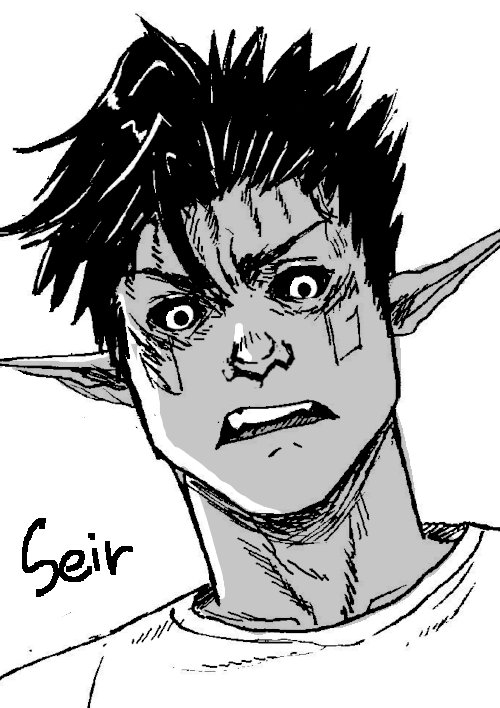
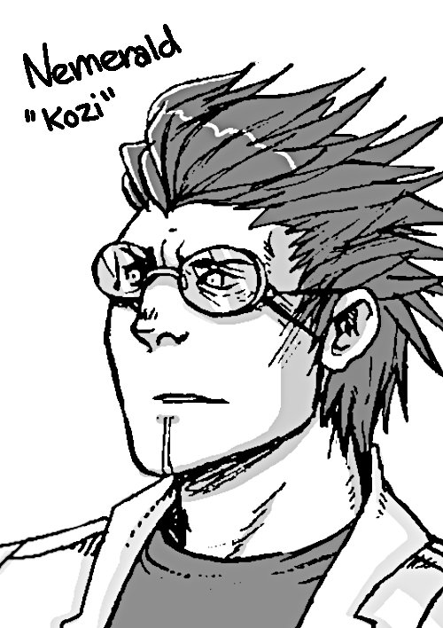
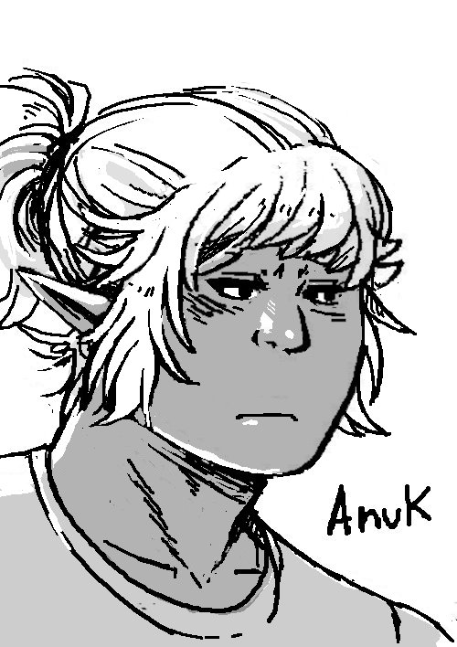
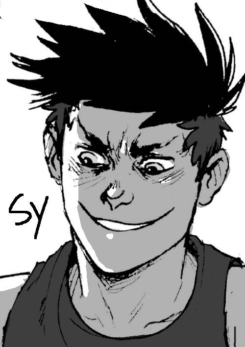
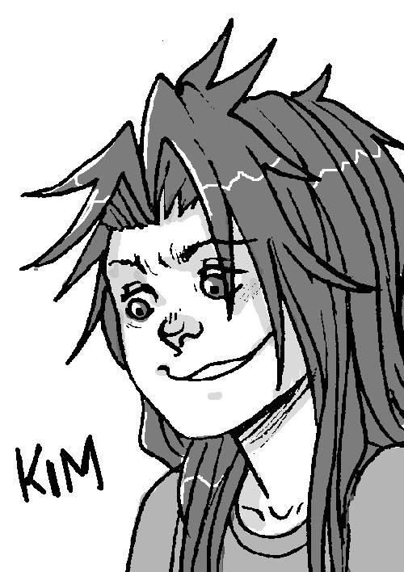
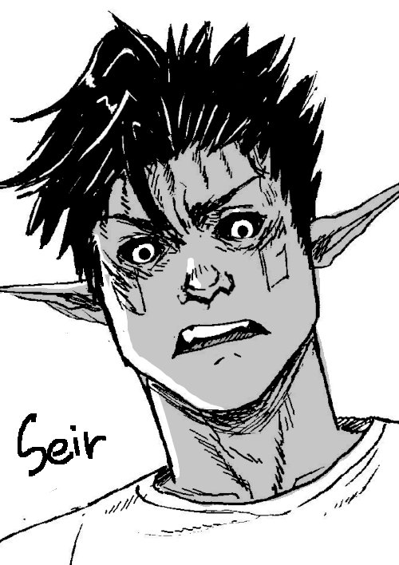
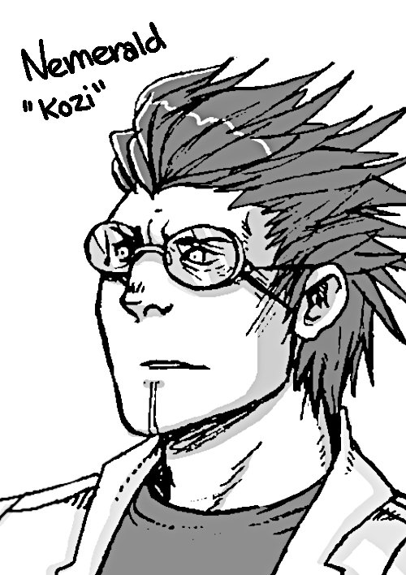
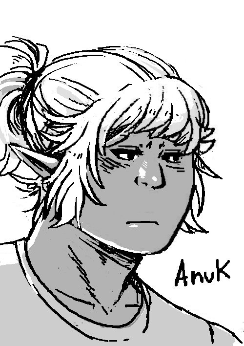
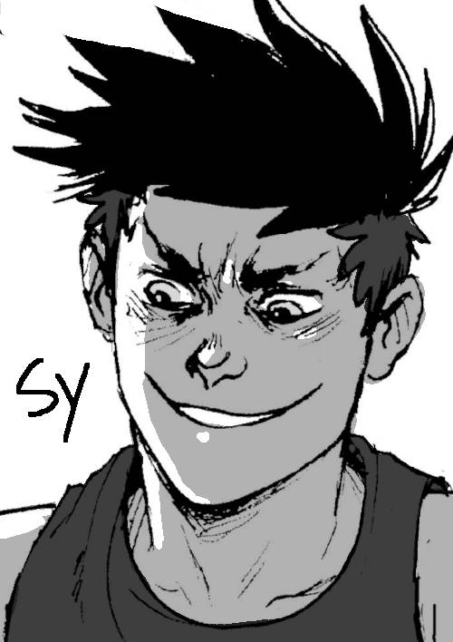
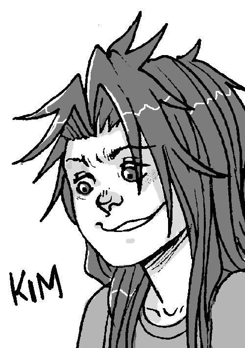

Comic
For now, the comic is non-linear, and I update it sporadically. The comic is drawn by hand, and inked with a dip pen. Shading is done with halftones handmade in Gimp. Because I have to resize the comics for the web, the haftone isn't as apparent (every page is 25% of its original size). Previews below are 50% of the original file size.
See some short sequences I've put together. Click on the images to view the comics:
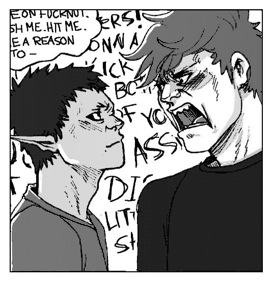disengaging
[Finished on March 10th, 2023. 4 pages long.]
Context: This is during a time before the solomons devils existed, not too long after Kaddali and Hazaki met at a protest against a development project in the Taiga. (CW: swearing)
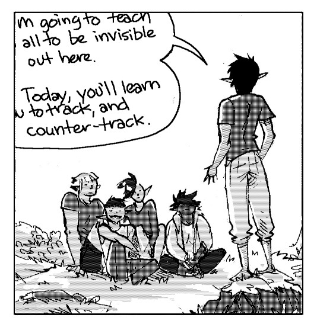tracking
[Finished on February 25th, 2023. 7 pages long.]
Context: This sequence takes place in the past, in the early days of the Solo D's. The ToT (Terror of the Taiga) has recently revealed himself to the group, to give them a hand so that they can monkeywrench safely. In this sequence, he is teaching its current members how to track and counter-track.

liskar
[Finished on December 11th, 2022. 8 pages long.]
Context: After his accident, Hakazi is incarcerated in Liskar. His injuries make it difficult for him to communicate, and he feels more alone than ever, but his stay there is made better when he meets a fellow inmate. (CW: violence, blood). (CW: violence, blood, swearing)
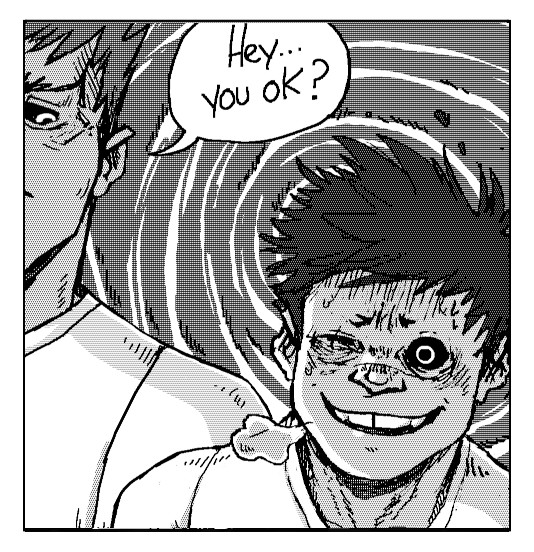the event
[Finished on February 2nd 2023 14 pages long.]
Context. Hakazi and Ikkard have been in Liskar together for 3 years, but now an event threatens their friendship and Hakazi isn't sure he can survive another big change... (CW: violence, swearing, death)
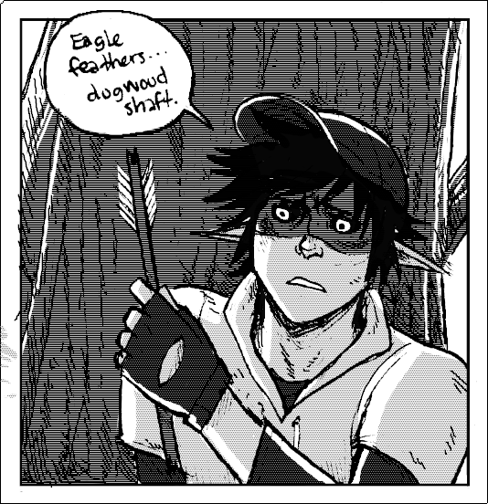chase
[Finished on October 31st 2022. 9 pages long.]
Context: Many human hostiles go to the woods with the goal to hunt Dae(also known as the ToT, the 'Terror of the Taiga'), and the Solomon's Devils down. On one of his runs, he stumbles on a camp. Dae is worried, and decides to go and take a closer look. (CW: violence, blood). (CW: violence, blood, swearing)
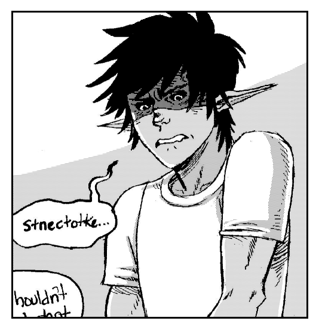the tot
[Finished on January 19th 2023 9 pages long.]
Context: Dae is on the mend, but impatient. He is staying in Kozi's clinic. Seir, head of the Ars Goetia, and an old friend, comes to see how he's doing. Seir thinks back on the time when he fist met Dae. (CW: swearing)

sy and kim
[Finished on April 22nd 2023. 14 pages long.]
Context: Sy and Kim are relaying a message back to the Solomon's Devils since Dae is hurt, to warn them of the increasing hostile activity in the Taiga. (CW: swearing, sex)
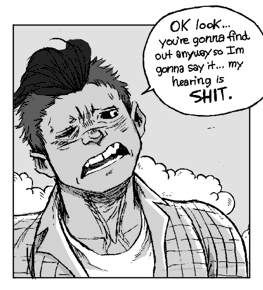reunited
[Finished on October 17th 2022. 7 pages long.]
Context: Yegon(formerly, Hakazi) was shot in the eye during a Solo Devs mission in Ren Creek, his group thought him dead. After recovering he was incarcerated in Liskar. Yegon and the Solo Devs crossed paths again 6 years later. This moment is a few months after Yegon is back with the Solo Devs. Kaddali now heads the Solo Devs, and under their leadership the group is doing better than ever. Yegon, on the other hand, feels bitter about what's happened to him, and has difficult accepting the fact that his former group has been thriving without him. Kaddali wants to be closer to Yegon, they still have feelings for him (they were dating prior to the accident), but because of how closed-off and bitter he's become it is not easy. (CW: sex)

whodidwhat
[Finished on March 29th 2023. 12 pages long.]
Context: hakazi has been back with the solomons devils for a few weeks, but little is known about how he and fellow patient ikkard escaped one of the more secure units of the Liskar Psychiatric Hospital the day of the fire. When kaddali finally gathers the courage to ask, hea doesn't get the response hea expected... (CW: violence, blood, death, swearing)

meds
[In progress.]
Context: hakazi(now uses the name Yegon) has been on his own for a while in Montore after leaving the Solo Devs(yet again), following a fight with ikkard and kaddali. His symptoms are getting worse, he can no longer control his outbursts. To try and limit the damage he causes, he visits a clinic in Montore (owned by jak and nemerald) to try and get some meds.
Extra art
 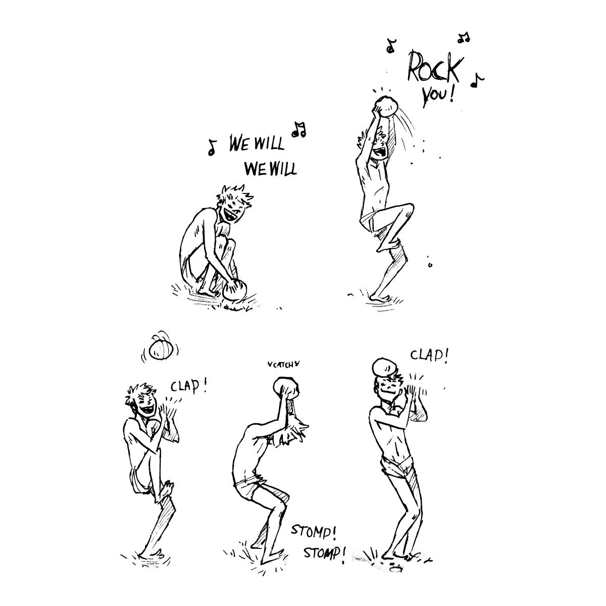
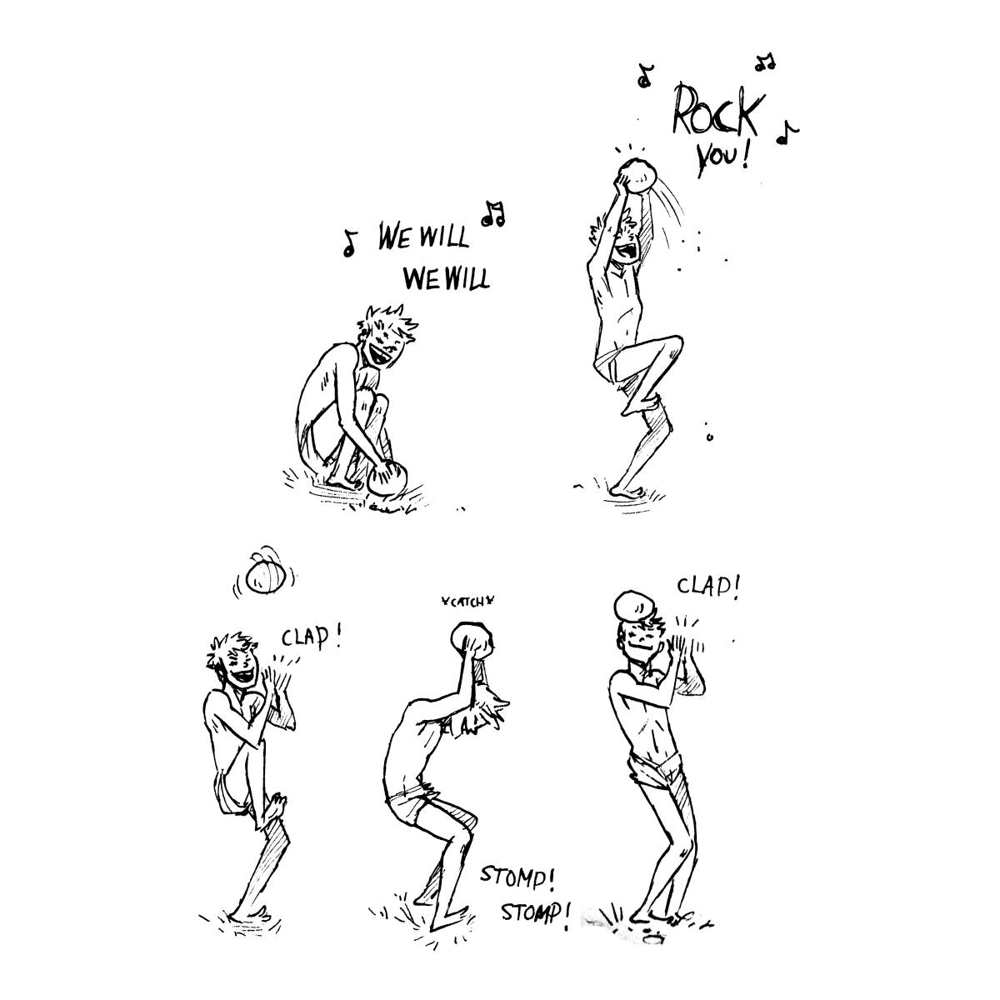